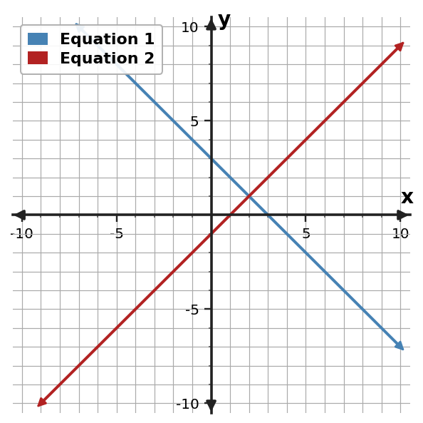
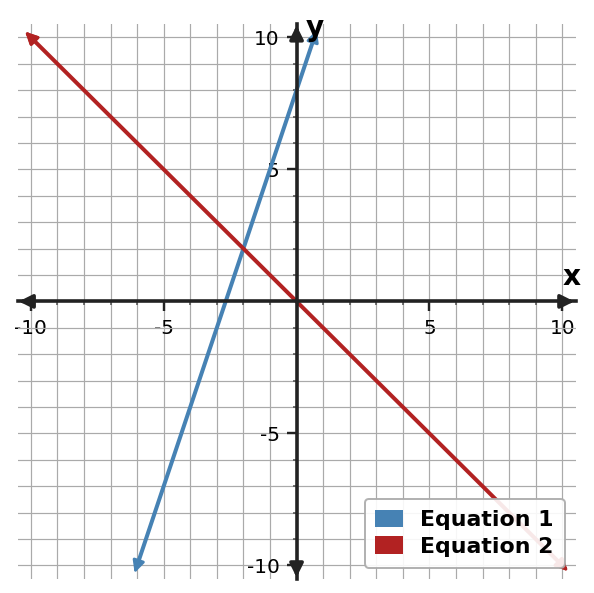
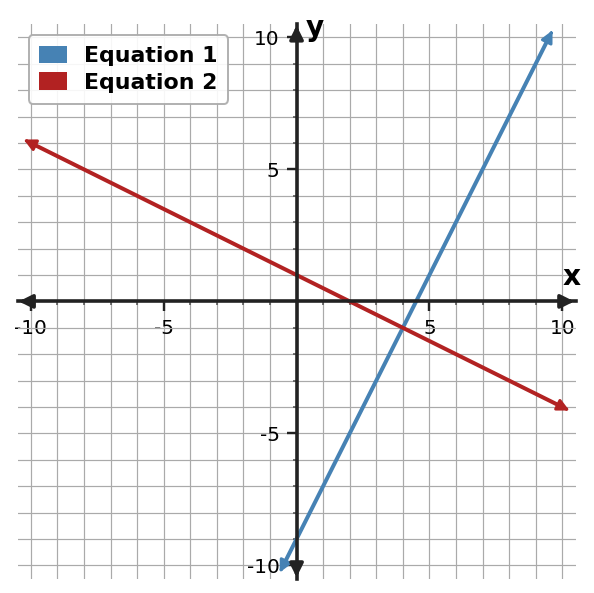
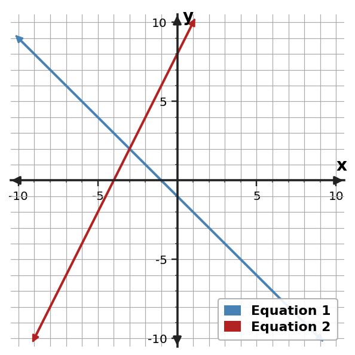

Algebra Practice 3.1
1. A student multiplies only one term of $x+2y=7$ by $-2$ before elimination. Identify the mistake and write the correct equivalent equation.
2. Use the graph to determine the solution of the system.

3. Use the table to identify the ordered pair that satisfies both equations.
| x | Equation 1 y | Equation 2 y |
|---|---|---|
| 1 | 0 | -4 |
| 2 | 2 | 0 |
| 3 | 4 | 4 |
| 4 | 6 | 8 |
| 5 | 8 | 12 |
4. Solve by elimination. $\begin{cases}2x+3y=10\\-2x+y=6\end{cases}$
5. Use the graph to determine the solution of the system.

6. Classify the system as one solution, no solution, or infinitely many solutions.
$\begin{cases}y=-x+4\\y=-x+6\end{cases}$
7. Classify the system and justify with algebraic or graphical evidence.
$\begin{cases}2x+4y=10\\x+2y=5\end{cases}$
8. A student multiplies only one term of $x-3y=4$ by $2$ before elimination. Identify the mistake and write the correct equivalent equation.
9. Use the graph to determine the solution of the system.

10. Use the table to identify the ordered pair that satisfies both equations.
| x | Equation 1 y | Equation 2 y |
|---|---|---|
| 2 | -5 | 0 |
| 3 | -3 | -1/2 |
| 4 | -1 | -1 |
| 5 | 1 | -3/2 |
| 6 | 3 | -2 |
11. Solve by elimination the system.
$\begin{cases}x + y = 3\\x - y = 1\end{cases}$
12. Use the table to identify the ordered pair that satisfies both equations.
| x | Equation 1 y | Equation 2 y |
|---|---|---|
| -3 | 1 | 7 |
| -2 | 2 | 5 |
| -1 | 3 | 3 |
| 0 | 4 | 1 |
| 1 | 5 | -1 |
13. Classify the system as one solution, no solution, or infinitely many solutions.
$\begin{cases}y=3x-2\\y=3x+0\end{cases}$
14. Classify the system as one solution, no solution, or infinitely many solutions. $\begin{cases}y=-x-2\\y=2x-3\end{cases}$
15. A student multiplies only one term of $3x+y=8$ by $-1$ before elimination. Identify the mistake and write the correct equivalent equation.
16. Use the graph to determine the solution of the system.

17. Use the table to identify the ordered pair that satisfies both equations.
| x | Equation 1 y | Equation 2 y |
|---|---|---|
| 0 | 3 | -1 |
| 1 | 2 | 0 |
| 2 | 1 | 1 |
| 3 | 0 | 2 |
| 4 | -1 | 3 |
18. Solve by elimination the system.
$\begin{cases}x - y = -4\\2x + y = 1\end{cases}$
19. Solve by elimination the system.
$\begin{cases}2x + y = 4\\x - y = 5\end{cases}$
20. Classify the system as one solution, no solution, or infinitely many solutions.
$\begin{cases}y=2x+1\\y=2x+3\end{cases}$
21. Classify the system as one solution, no solution, or infinitely many solutions. $\begin{cases}2x-2y=10\\-4x+4y=-20\end{cases}$
22. A student multiplies only one term of $2x-y=5$ by $3$ before elimination. Identify the mistake and write the correct equivalent equation.
23. Use the graph to determine the solution of the system.

24. Use the table to identify the ordered pair that satisfies both equations.
| x | Equation 1 y | Equation 2 y |
|---|---|---|
| -5 | 4 | -2 |
| -4 | 3 | 0 |
| -3 | 2 | 2 |
| -2 | 1 | 4 |
| -1 | 0 | 6 |